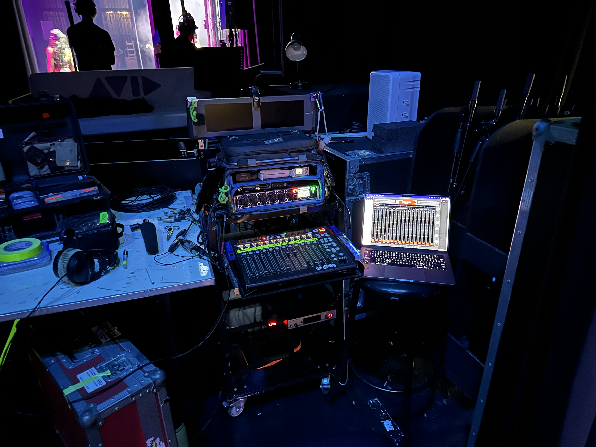

Gear :: a non-exhaustive list;
For Documentary and factual content I have a small and portable bag setup and for TVC and drama I have a full production sound cart setup.
Recorders/Mixers
Sound Devices 833 12 Track Mixer/Recorder
Sound Devices Mix Pre 10T - 10 channel recorder
Sound Devices CL-12 - 12 channel control surface.
Sound Devices Mix Pre 10T - 10 channel recorder
Sound Devices CL-12 - 12 channel control surface.
Wireless:
10 channels of Sound Devices
Astral wireless
available
including...
Sound Devices A20 Nexus - 8 - 16 channel Receiver
3 x Audio Ltd. A10 Receivers
2 x Sound Devices A20 transmitters with timecode, internal recording and Phantom Power
4 x Sound Devices A20 mini with timecode and internal recording
4 x Audio ltd A10 transmitters with timecode and internal recording
Sound Devices A20 Nexus - 8 - 16 channel Receiver
3 x Audio Ltd. A10 Receivers
2 x Sound Devices A20 transmitters with timecode, internal recording and Phantom Power
4 x Sound Devices A20 mini with timecode and internal recording
4 x Audio ltd A10 transmitters with timecode and internal recording
Microphones
Sanken Cs3e shotgun for exterior location
DPA 2017 shotgun microphone
2 x Sennheiser 8050 hypercardiod mics for indoor recording
2 x Rode Nt-5 pencil mics for stereo Atmos recording Rode NtG 3 Shotgun
6 x DPA 4060's
4 x DPA 6060's
3 x Shure SM7B Podcast mic's
1 x custom 'Neuman U87' clone large diaphram condensor
DPA 2017 shotgun microphone
2 x Sennheiser 8050 hypercardiod mics for indoor recording
2 x Rode Nt-5 pencil mics for stereo Atmos recording Rode NtG 3 Shotgun
6 x DPA 4060's
4 x DPA 6060's
3 x Shure SM7B Podcast mic's
1 x custom 'Neuman U87' clone large diaphram condensor
Coms/IFB
10 IFB receivers for client monitoring
2 x sennheiser G3 kits for camera/ IFB feeds
Large battery operated playback speaker
2 x sennheiser G3 kits for camera/ IFB feeds
Large battery operated playback speaker